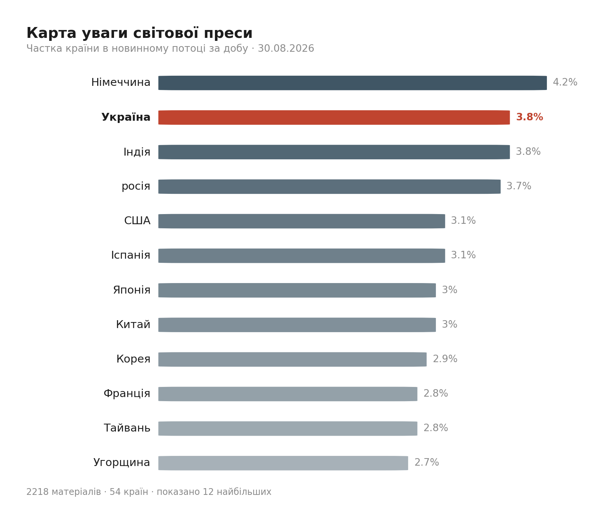

Ранковий бріф · огляд світової преси

Отже, Ісландія все ж сказала ЄС "ні" — і зробила це майже навпіл. Остаточний підрахунок дав 52,5–52,8% проти відновлення переговорів про вступ, сільські округи з їхньою тривогою за квоти на вилов риби перекрили голоси Рейк'явіка. Це закриває сюжет, який ми оцінювали як імовірну перемогу прихильників ЄС (наш прогноз не справдився) — і водночас відкриває новий: тепер питання, чи скористається цим Трамп для тиску щодо Гренландії.
Пором перекинувся біля Північного Кіпру за кілька кілометрів від берега, невдовзі після виходу з порту. Підтверджено сім загиблих, 237 врятовано, 23 людини досі шукають — за попередніми підрахунками рятувальників, на борту було близько 267 людей; причина аварії поки не встановлена, але це вже другий масовий морський інцидент у регіоні за літо, і питання перевантаження суден знову на порядку денному (тривалість сюжету: другий день).
Кількість жертв повені в Гімалаях продовжує зростати по обидва боки кордону, і цифри розходяться. За даними непальської влади (Gulf News), загинули 781 людина, зникли безвісти 2502. Окремо китайська сторона — за виданням Caixin — повідомляє про 16 загиблих і 546 зниклих у Тибетському автономному районі станом на вечір 29 серпня: це перша конкретна китайська статистика за кілька днів мовчання, хоча вона стосується лише своєї території і не зводиться з непальською (тривалість: п'ята доба).
Міноборони Росії офіційно заявило про підготовку "масованих ударів" по енергетичній інфраструктурі України — у відповідь на удар українських дронів по НПЗ у Киришах. Одночасно, за даними Politico і Welt (переказаними Meduza й Novaya Gazeta Europe), канцлер Німеччини Мерц найближчими днями планує офіційно звинуватити Росію в спробі атаки дроном на аеропорт Лейпцига і оголосити новий пакет санкцій. Два сюжети зчіплюються в один: ризик зимових блекаутів в Україні росте одночасно з посиленням санкційного тиску на Москву з боку Берліна (тривалість: третя доба).
Нафтова угода США–Венесуели на 25 років і 65 млрд барелів продовжує лишатися непрозорою: структуру й оператора-партнера так і не розкрили. За Financial Times, угоду одночасно критикують хардлайнери венесуельської влади, які називають її розпродажем, і опозиція, яка звинувачує Вашингтон у втручанні — рідкісний випадок, коли ворогуючі табори збігаються в незгоді, хоч і з різних причин (тривалість: четверта доба).
Сюжет перший: референдум в Ісландії.
🇦🇺 ABC News подає результат як перемогу прибережної ідентичності: ісландці, за виданням, вирішили, що рибальські води важливіші за політичні вигоди членства, і це питання суверенітету, а не євроскептицизму як такого.
🇨🇿 Deník N шукає раціональне пояснення для власної, ще не визначеної щодо ЄС аудиторії: видання прямо пише, що страх за квоти на вилов риби — головна, майже єдина причина результату, проєктуючи локальний конфлікт на загальноєвропейську рамку.
🇪🇺 Euractiv додає іронічний штрих, цитуючи ісландського колумніста: "щось смердить рибою в Брюсселі" — натякаючи, що зайва напористість самих євроінституцій налякала виборців більше, ніж будь-яка агітація "ні"-кампанії.
Замовчують: жодне з проаналізованих видань не згадує геополітичний контекст Арктики й Гренландії, хоча саме в цьому напрямку, за шведською Dagens Nyheter, результат може відгукнутися найгучніше.
Чому розходяться: австралійська преса дивиться на подію ззовні і бачить локальну ідентичність без інституційних наслідків; брюссельські видання зацікавлені в наративі опору розширенню, бо це стосується їхньої власної інституційної долі; чеське видання шукає урок для себе, оскільки Чехія сама балансує між ентузіазмом і скепсисом щодо Брюсселя.
Сюжет другий: повінь у Гімалаях (тут радше йдеться про розбіжність жанру подачі, ніж про сутнісний розкол фактів чи причин).
🇦🇺 Guardian Australia фокусується на 41 зниклому австралійці й персональних історіях родин біля лікарняних стін, обвішаних фотографіями невпізнаних жертв.
🇨🇳 Caixin, єдине джерело з точними цифрами по китайській стороні, тримається сухого реєстру: скільки загинуло, скільки зникло, скільки квадратних метрів займає новоутворене озеро — рамка логістики й контролю ризиків, без емоційного акценту.
🇦🇪 Gulf News ретранслює офіційну непальську статистику без критичного дистанціювання — просто цифри влади, що зростають з кожним випуском.
Замовчують: жодне західне видання не зводить китайську й непальську статистику докупи, хоча йдеться про одну й ту саму річку і транскордонну катастрофу.
Чому розходяться: австралійська преса пише для аудиторії, стурбованої власними громадянами; китайське бізнес-видання звітує перед читачами, яким потрібні перевірювані факти для оцінки ризиків; арабське видання транслює офіційну позицію постраждалої країни без застережень; канадське — обирає емоційний жанр, бо цифри вже втомили читача. (Примітка: сьогодні австралійські видання представлені в обох сюжетах розколу — ABC News й Guardian Australia; це збіг вибірки джерел дня, а не сутнісна перевага австралійської оптики.)
28.08 Голова ФРС Кевін Уорш у Джексон-Хоулі натякнув на можливе підвищення ставки. 30.08 Того ж тижня міністр фінансів США Бессент попередив про ризики вимушеного розпродажу японських активів для дохідності казначейських облігацій США (деталі — у розділі ГРОШІ) → веде до: посилення нервозності перед вересневим засіданням FOMC і ризику ланцюгової реакції на ринках облігацій розвинених країн.
кілька днів тому Біля аеропорту Лейпцига виявлено дрон із вибухівкою → 30.08 Мерц готується офіційно звинуватити Росію і оголосити санкції (див. ГОЛОВНЕ) → веде до: нового витка санкційного тиску ЄС на тлі й так загостреної риторики Кремля щодо Заходу.
останні дні Україна завдала удару по НПЗ у Киришах Ленінградської області → 30.08 Міноборони РФ оголосило про підготовку "масованих ударів" у відповідь (див. ГОЛОВНЕ) → веде до: ризику масштабних відключень електроенергії взимку і нового витка тиску на партнерів щодо постачання систем ППО.
Бессент попереджає, що вимушений розпродаж японських активів вдарить по домогосподарствах і ринку казначейських облігацій США на тлі держборгу в 40 трлн доларів.
За даними БЦРА, з моменту відкриття валютного контролю аргентинці купили майже 45 млрд доларів.
Нафтова угода США–Венесуели (65 млрд барелів, 25 років) залишається без розкритої структури — деталі й реакції сторін див. у ГОЛОВНОМУ.
Китай посилив правила продажу недобудованого житла — спроба витягнути будівельний сектор із багаторічної кризи.
Поки серйозна преса чекає офіційного звинувачення Росії щодо Лейпцига, німецький Bild вже підказує "російський слід" — тільки в іншому сюжеті, про подарунок-чашку в офісі політика АдН, і паралельно тизерить "осінь правди для канцлера Мерца". Одна тема, дві швидкості.
Швейцарський Blick того самого дня, коли в країні сталася стрілянина з можливим терористичним мотивом, розповідає читачам про "хитрий трюк з чайовими в ресторанах" і появу королівської родини на службі пам'яті. Паралельні світи в одному виданні.
Індійський Times Now між серйозними темами вставляє "pheromone-maxxing" як новий тренд у знайомствах — таблоїдна Індія живе окремим порядком денним від дипломатичних угод з Узбекистаном.
Загроза масованих ударів РФ по енергетиці (див. ГОЛОВНЕ) змушує Київ готуватися до важкої зими й активніше шукати в партнерів додаткові системи ППО.
Бельгія знову виступила проти використання заморожених активів РФ для підтримки України, що затримує фінансування; паралельно, за Dnevnik, Київ прагне достроково використати позику ЄС для покриття бюджетного дефіциту.
Україна випробувала чотири типи перехоплювачів реактивних дронів (за Babel) — розвиток власних засобів ППО може пом'якшити наслідки анонсованої Росією ескалації і знизити залежність від імпортних систем.
Заколот у Нігері практично зник з порядку денного, витіснений повінню й катастрофою порому: хунта заявляє про контроль, але конкретних імен заарештованих чи офіційного розслідування досі немає. Мовчать майже всі великі редакції, крім побіжної згадки Al Jazeera про арешти десятків військових; причина проста — тема програє за увагою гучнішим катастрофам, а розслідування деталей африканського перевороту вимагає ресурсу, якого зараз ніхто не виділяє.
Іранська заява про блокування 30 суден в Ормузькій протоці (див. ПУЛЬС КРАЇН) досі підтверджена лише білоруським державним BelTA з посиланням на Тегеран — жодне незалежне видання цю цифру не перевірило. Мовчать усі редакції поза державною орбітою; ймовірна причина — цифра походить від зацікавленої сторони через посередника, і перевірити її складно без власних джерел у регіоні.
Пропозиція директора ЦРУ Реткліффа щодо організації саміту Трамп-Путін-Зеленський, яка активно обговорювалася раніше, сьогодні не отримала жодного розвитку в жодному з відстежених видань. Мовчать усі сторони — Вашингтон, Кремль і Київ; ймовірна причина в тому, що переговорна пауза триває без офіційних заяв, і редакції поки не мають приводу повертатися до теми.
Хакерська атака на Берлін групою Rhysida (ультиматум на 2 млн євро за 6 ТБ даних) сьогодні не згадана в жодному з відстежених німецьких видань — ні натяку на дедлайн, ні на перемовини. Мовчить сам сенат Берліна (міська влада), який досі не оприлюднив жодного офіційного коментаря щодо ходу перемовин з хакерами; ймовірно, це свідома стриманість під час активної фази перемовин, а не брак інформації в редакцій.
Мерц готується публічно звинуватити Росію в спробі атаки на Лейпциг і оголосити санкції "найближчими днями". Ґрунтується на двох джерелах (Politico, Welt), інші редакції лише переказують їх.
Неперевірена заява Ірану про Ормузьку протоку (див. ПУЛЬС КРАЇН) може сигналізувати про підготовку до нової фази морської ескалації. Джерело одне — державне іранське, передане через BelTA.
Публікація Kommersant про те, що "російські військові допомогли придушити збройний заколот у Нігері", натякає на зростання ролі російських радників у Сахелі, поки західні медіа цю деталь оминають. На одному джерелі.
Підсумок минулого: прогноз щодо референдуму в Ісландії (55% на відновлення переговорів) не справдився — остаточний результат виявився протилежним. Рахунок 0 з 1, і базова лінія теж дала б 0 з 1: обидва підходи помилились в один бік.
Наші:
Німеччина офіційно звинуватить Росію в атаці на Лейпциг і оголосить санкції до 05.09.2026
Непал і Китай оголосять спільний/зведений підрахунок жертв повені, або офіційно завершать пошуково-рятувальну операцію до 10.09.2026
Іран оголосить нові обмеження судноплавства в Ормузькій протоці, або США чи Британія посилять військову присутність у регіоні до 10.09.2026
Кажуть інші:
Karin Eriksson (Dagens Nyheter): поразка референдуму в Ісландії "може зміцнити" позиції Трампа щодо Гренландії — горизонт кілька місяців.
N1 Serbia: голосування Скупщини Сербії 31.08 щодо процедури поховання Ратка Младича може загострити відносини з Хорватією та вплинути на переговори про вступ до ЄС — горизонт найближчі тижні.
Кремль (за Nikkei Asia і SCMP): Путін і Сі зустрінуться на полях саміту ШОС у Бішкеку — 01.09.2026.
Середина вересня — засідання FOMC ФРС США щодо ставки.
Не відповіли: Daily Nation, Polityka, Al Arabiya, Il Foglio, Milenio, Liga.net.